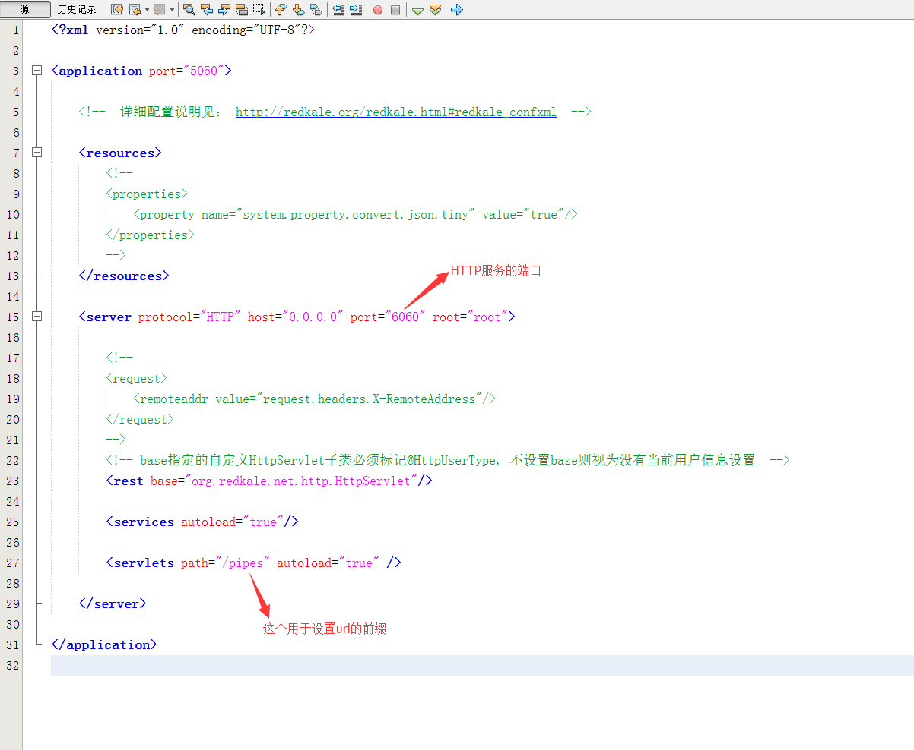
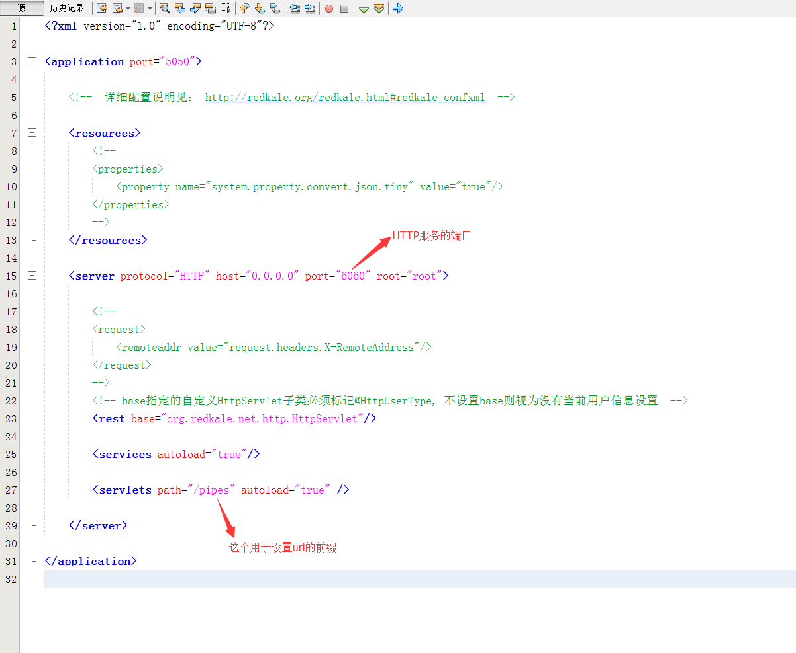

Redkale 入门教程 01 -- Hello Word！
Redkale 可以说是Java界最精简的框架，不到1M的jar包可以替代Tomcat、Spring/Spring Boot、Hibernate/MyBatis、JackJson/fastjson、Netty的集合，四两拨千斤。低调开源一年多，经过两次大的改善后终于达到让自己满意的地步。Redkale不仅仅提供简易的API，还附有很多不同于传统思维的设计思路。由于时间有限，一年多也没写入门教程，现在开始抽点时间写一些教程，希望能给想学Redkale的同学一点帮助。 废话不多说，下面进入正题。
下载Redkale
源码可以从 https://github.com/redkale 和 http://git.oschina.net/redkale/redkale 下载 。
jar包可以从 http://search.maven.org 和 https://repo1.maven.org/maven2/org/redkale/redkale/ 下载最新版本的包。
当前最新版为 1.8， 下载 redkale-1.8.tar.gz 放在本地。
创建工程
本人使用NetBeans很多年了，所以本教程以NetBeans来创建工程， 使用IntelliJ IDEA 或 Eclipse的同学请自行参考。


 

public final <E> Encodeable<W, E> findEncoder(final Type type) {
Encodeable<W, E> rs = (Encodeable<W, E>) encoders.get(type);
if (rs != null) return rs;
return this.parent == null ? null : this.parent.findEncoder(type);
}当搜索不到Encoder、Decoder时，自身的ConvertFactory会自动创建一个ObjectEncoder、ObjectDecoder。
public final <E> Encodeable<W, E> loadEncoder(final Type type) {
Encodeable<W, E> encoder = findEncoder(type);
if (encoder != null) return encoder;
if (type instanceof GenericArrayType) return new ArrayEncoder(this, type);
Class clazz;
if (type instanceof ParameterizedType) {
final ParameterizedType pts = (ParameterizedType) type;
clazz = (Class) (pts).getRawType();
} else if (type instanceof TypeVariable) {
TypeVariable tv = (TypeVariable) type;
Type t = Object.class;
if (tv.getBounds().length == 1) {
t = tv.getBounds()[0];
}
if (!(t instanceof Class)) t = Object.class;
clazz = (Class) t;
} else if (type instanceof Class) {
clazz = (Class) type;
} else {
throw new ConvertException("not support the type (" + type + ")");
}
encoder = findEncoder(clazz);
if (encoder != null) return encoder;
return createEncoder(type, clazz);
}大部分情况下Convert的处理对象会根据JavaBean类自定生成，而有些场景需要覆盖处理类，这样需要子ConvertFactory，如 Convert基本用法 例子中使用JsonFactory.root().createChild()重定义。且与JsonFactory.root()中的定义可以并存，也不会产出冲突。
Redkale可以启动多个协议Server服务(配置文件中含多个server节点)，为避免冲突，每个非SNCP的Server的ResourceFactory也是独立的。
public NodeServer(Application application, Server server) {
this.application = application;
this.resourceFactory = application.getResourceFactory().createChild();
this.server = server;
this.logger = Logger.getLogger(this.getClass().getSimpleName());
}双亲委托模型既可让同级子Factory保持独立，也可重用父Factory内的配置，因此在Redkale这种支持多Server、多种配置的场景下很是适合。